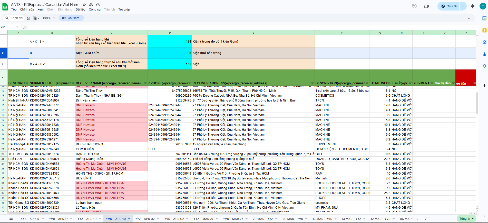
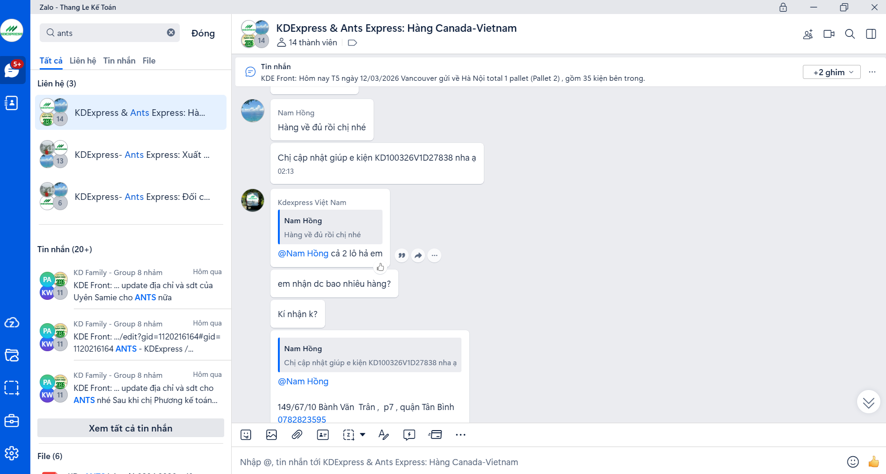
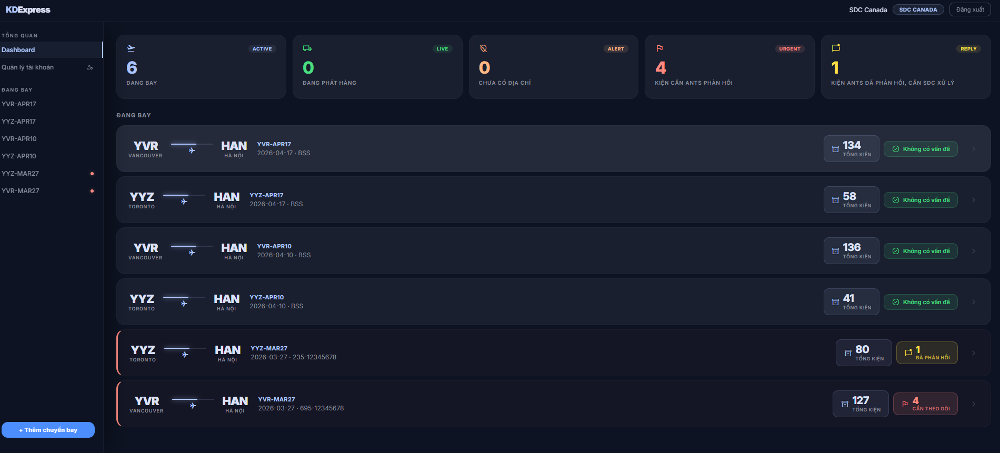
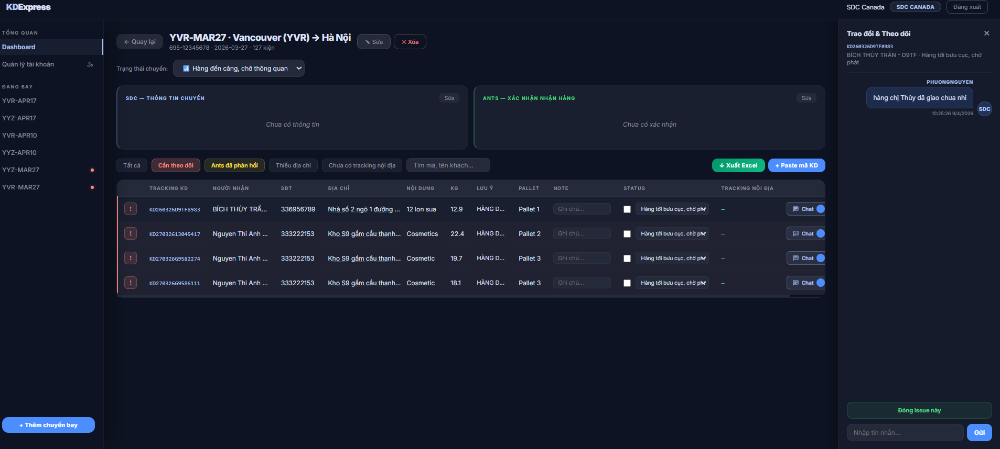
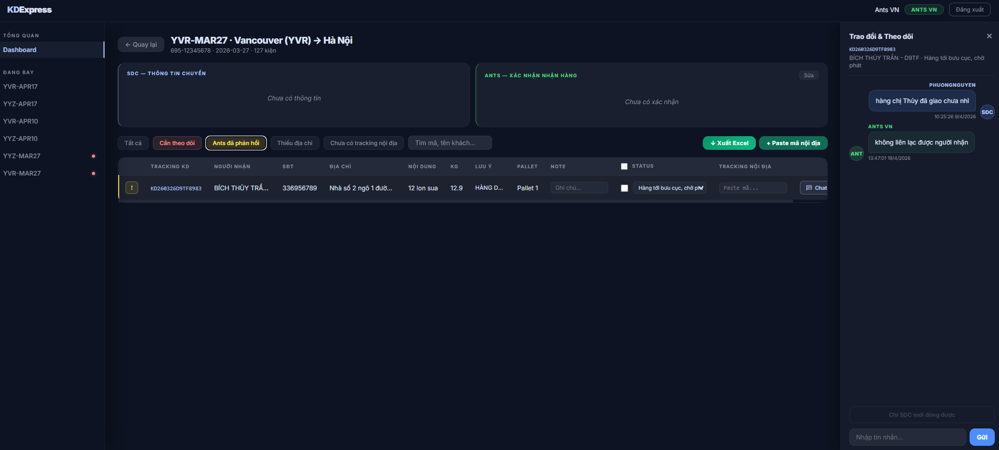

Why This System Was Built
KDExpress Canada coordinates last-mile delivery in Vietnam through a third-party delivery partner. Issue tracking and communication between the Canadian operations team and the delivery partner relied on fragmented tools — Google Sheets and Zalo messaging.
- Customer updates required duplicate entry across multiple platforms — resulting in inconsistent data
- Issue tracking was entirely conversational — staff manually searched chat histories to locate updates
- No standardised reporting protocol — inconsistent communication and missed updates
- No clear accountability for issue resolution per parcel
- Response times averaged 24–48 hours due to fragmented workflows
System Capabilities
I independently designed and implemented a structured issue tracking platform that centralises parcel-level communication between KDExpress Canada and its delivery partner — replacing informal chat-based coordination with a structured and standardised workflow.

Figure 1 — Legacy workflow — shipment tracking managed manually in Google Sheets (before system)

Figure 2 — Previous issue handling via Zalo chat — fragmented communication, no accountability

Figure 3 — Centralised shipment monitoring dashboard — parcels organised by flight batch with status indicators

Figure 4 — Parcel-level issue tracking — individual records with recipient info, status, and flag indicators

Figure 5 — Integrated parcel-level communication — issues recorded and resolved within platform, full traceability
Internal Control Connection
- Reduces risk of failed deliveries and associated refund claims
- Minimises customer complaints and protects revenue margins
- Supports accurate tracking of fulfilment service outcomes
- Improves customer retention — protects business revenue stability